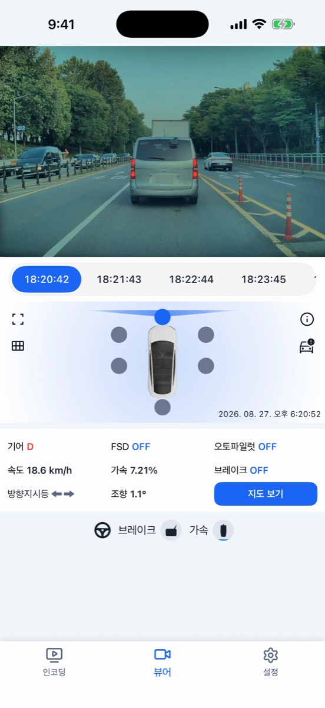
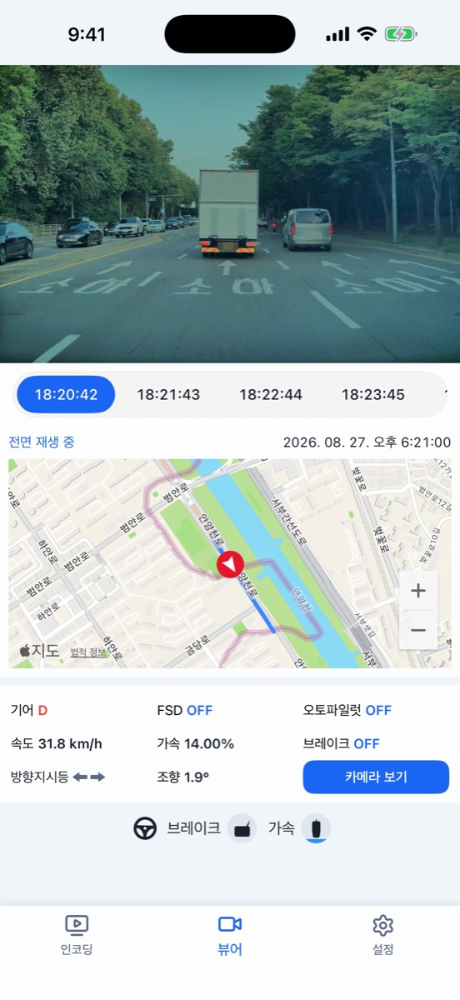
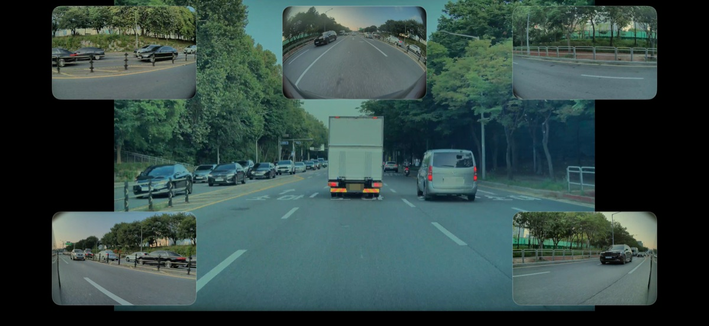
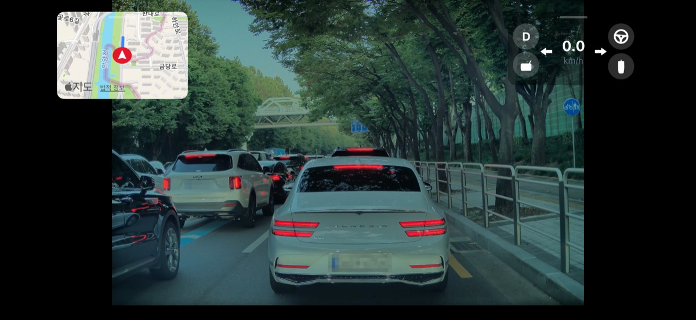
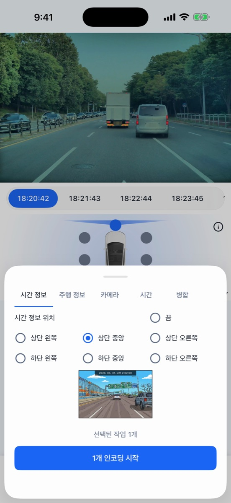
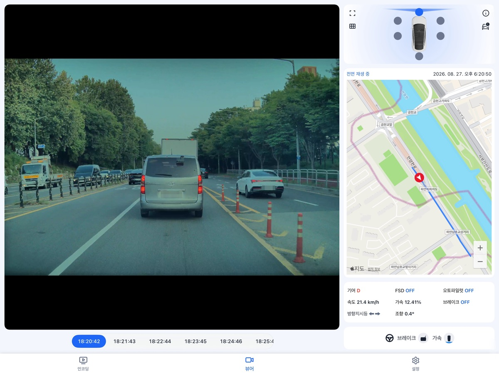

테슬라 블랙박스 영상을 속도·기어·조향 같은 주행 정보와 함께 보고, 시각과 주행 정보를 영상에 새겨 저장하세요. 6개 카메라를 한 화면에서.






촬영 시각과 속도·기어·조향각·방향지시등 등을 영상에 새겨 새 영상으로 저장하고 바로 공유합니다.
전방·후방·좌우 리피터·필러 카메라를 빠르게 전환하고, 시간대 탭으로 원하는 순간으로 이동합니다.
기어·속도·브레이크·가속·방향지시등·조향각·오토파일럿 상태를 영상과 동기화해 보여 줍니다.
영상의 위치 정보로 주행 경로를 지도에 그리고, 재생에 맞춰 현재 위치가 움직입니다.
최대 6개 카메라를 동시에 재생하고, 가로 전체화면에서는 지도와 주행 정보를 작은 창으로 띄웁니다. iPad는 분할 화면을 지원합니다.
영상과 위치 정보는 기기 안에서만 처리되며 서버로 전송되지 않습니다.
주행 정보는 테슬라가 블랙박스 영상에 기록한 데이터를 읽어 표시합니다. 테슬라 앱이나 메신저로 받은 영상에는 포함되지 않을 수 있습니다.